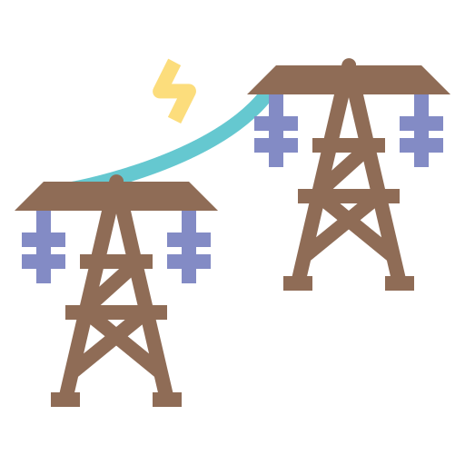

Corte de Luz 
Eventuales Cortes de Luz, no programados, y que afecten tareas críticas del CD como recorte de stock, ruteo, facturación, etc.
Tipo de Riesgo: CRÍTICO
¿Qué Hacer?
- Informar al Gerente y/o Jefe de Operaciones
- El personal capacitado debe verificar el funcionamiento del generador verificando visualmente el sistema de iluminación de la unidad.
- Controlar funcionamiento de UPC - Controlar Funcionamiento Luces de Emergencia.
- Llamar a CLYFEMA para pedir información (motivo, tiempo estimado de resolución, etc.)
- Informar a todas las áreas involucradas (área Comercial, Plantas y OL) del problema, medidas a tomar y cómo afecta el normal desarrollo de las tareas.
¿Quién?
- GERENTE DEL CD
- JEFE DE OPERACIONES
- CLYFEMA
Teléfonos:
02257-15532455, 02257-15537368, 02257-604000
Corte de Sistema
Eventuales Caídas de Sistema que afecten tareas críticas del CD como recorte de stock, ruteo, facturación, etc.
Tipo de Riesgo: CRÍTICO
¿Qué Hacer?
- Informar a jefe y/o coordinador del CD.
- Llamar al técnico y evaluar la situación para obtener información sobre el período de resolución.
- Informar a todas las áreas involucradas (área Comercial, Plantas y OL) del problema, medidas a tomar y cómo afecta el normal desarrollo de las tareas.
¿Quién?
- GERENTE DEL CD
- JEFE DE OPERACIONES
- TECNICO
Teléfonos:
02257-15532455, 02257-15537368
Sin Internet
Eventuales Cortes de Internet, no programados, y que afecten tareas críticas del CD como recorte de stock, ruteo, facturación, etc.
Tipo de Riesgo: CRÍTICO
¿Qué Hacer?
- Informar al Gerente y/o Jefe de Operaciones
- Contactarse con el proveedor de Internet para pedir información (motivo, tiempo estimado de resolución, etc.)
¿Quién?
- GERENTE DEL CD
- JEFE DE OPERACIONES
- MOVISTAR HOGAR
Teléfonos:
02257-15532455, 02257-15537368, 114
Incendio
Se define por incendio la combustión no deseada de uno o varios materiales. Combustión es un fenómeno de oxidación exotérmica que se produce con carácter irreversible. Un incendio es una ocurrencia de fuego no controlada que puede afectar o abrasar algo que no está destinado a quemarse.
Tipo de Riesgo: CRÍTICO
¿Qué Hacer?
- Persona que detecta el Incendio comunica al encargado más cercano
- Se da aviso a la Brigada para iniciar el control mediante su intervención.
- Se evacua la zona
- Observar que el mínimo de personal esté en extinción y solo el calificado para usar los medios disponibles.
- Sólo se podrán retomar las tareas habituales cuando el coordinador de emergencia, la directiva y los profesionales correspondientes lo autoricen.
¿Quién?
- GERENTE DEL CD
- JEFE DE OPERACIONES
- ENCARGADO DE BRIGADA
Teléfonos:
02257-15532455, 02257-15537368
Paro Sindical
El Sindicato de la operación resuelve el paro total de actividades no permitiendo el desarrollo de las tareas de Depósito y Distribución, afectando el armado de las cargas y/o su posterior salida a la entrega de las mismas.
Tipo de Riesgo: ALTO
¿Qué Hacer?
- Jefe del CD chequea las fuentes de información y busca negociar con el sindicato la posibilidad de levantar el paro.
- Llamar a los Jefes de Ventas para los clientes sean comunicados que los pedidos no van a ser entregados.
- Programar los Jefes de Ventas la cantidad de pedidos fuera de ruta para los días posteriores.
- Comunicarse con EC para pedir desagio de los rechazos del día de paro.
- El personal del CD que no cuente con medios de transporte propio deberá coordinar con los que sí cuenten.
¿Quién?
- GERENTE DEL CD
- JEFE DE OPERACIONES
Teléfonos:
02257-15532455, 02257-15537369
Emergencia Médica (Interna)
Se considera Emergencia Médica aquella situación en la cual, por la importancia o gravedad de la afección, se deben tomar acciones y decisiones médicas en forma inmediata. Se trata de cuadros que en general ponen la vida del paciente en peligro.
Tipo de Riesgo: CRÍTICO
¿Qué Hacer?
- Evacuar inmediatamente el área de entorno a la víctima o víctimas.
- Informar al Jefe de Emergencias y Jefe de Brigadas.
- Informar a un superior solicitando servicio de emergencias médicas.
- Permita que personal entrenado aplique primeros auxilios en forma inmediata.
- Si el accidente provoca muerte, evacuar sectores próximos internamente.
- Evite que el personal a su cargo tenga contacto con la víctima o escena.
- Sólo se podrán retomar las tareas habituales si el servicio médico y la directiva lo permiten.
¿Quién?
- GERENTE DEL CD
- JEFE DE OPERACIONES
- ENCARGADO DE BRIGADA
Teléfonos:
02257-15532455, 02257-15537370
Emergencia Médica (Externa)
Se considera Emergencia Médica aquella situación en la cual, por la importancia o gravedad de la afección, se deben tomar acciones y decisiones médicas en forma inmediata. Se trata de cuadros que en general ponen la vida del paciente en peligro.
Tipo de Riesgo: CRÍTICO
¿Qué Hacer?
- El vehículo no seguirá circulando
- Preste los primeros auxilios a las víctimas
- Informe a la empresa del hecho
- Ordene la circulación en la zona hasta la llegada de los servicios públicos.
- Evite nuevos accidentes derivados del primero
- Proceda con las indicaciones que se le dan desde planta o el procedimiento de la ART.
- Sólo se podrán retomar las tareas habituales si el Servicio Médico/ART y la directiva lo permiten.
¿Quién?
- GERENTE DEL CD
- JEFE DE OPERACIONES
- ENCARGADO DE BRIGADA
Teléfonos:
02257-15532455, 02257-15537371
Temporal
Inestabilidad meteorológica caracterizada por lluvias, vientos, relámpagos, truenos y ocasionalmente granizos entre otros fenómenos, que pueden llegar a causar inundaciones.
Tipo de Riesgo: ALTO
¿Qué Hacer?
- Informar a jefe y/o coordinador del CD.
- Comunicar alternativas de cómo operar en forma momentánea al equipo de trabajo dada la contingencia.
- En caso de presentarse alguna rotura estructural, seguir el procedimiento ante “ROTURAS ESTRUCTURALES”
- Comunicarse con la Municipalidad de La Costa si al acceso al Centro de Distribución es imposibilitado debido a la tormenta.
¿Quién?
- JEFE DE OPERACIONES
- MUNICIPALIDAD DE LA COSTA - DEFENSA CIVIL
Teléfonos:
02257-15537372, 103
Robo
El robo es un delito contra el patrimonio, es la apropiación indebida de algo ajeno, contra la voluntad de su poseedor.
Tipo de Riesgo: ALTO
¿Qué Hacer?
- Activación de las alarmas sonoras e inalámbricas del sector de tesorería.
- Comunicar al Gerente del CD.
- Reducir al mínimo todos los objetos de valor que llevan los empleados de distribución.
- Disponer de una caja de seguridad en los vehículos cuando deba transportarse dinero en efectivo.
- Antes de salir a ruta verificar que la caja de seguridad se encuentra cerrada y la llave debe quedar en el CD, en las oficinas de los operadores logísticos correspondientes.
- El chofer debe ser el responsable del cobro en el PDV.
- Finalizado el cobro en efectivo en un PDV colocar inmediatamente el dinero en la caja de seguridad.
- Tomar rutas seguras teniendo en cuenta hora y lugar de la entrega en las zonas de riesgo.
- Capacitación sobre Prevención ante violencia.
- Bajada de Rutas con riesgo de violencia o PDV ubicados en zonas críticas.
¿Quién?
- GERENTE DEL CD
- JEFE DE OPERACIONES
Teléfonos:
02257-15532455, 02257-15537368
Saqueos
Se presenta cuando por razones de seguridad, se toma la decisión de cerrar el predio, con personal dentro o no, por un tiempo determinado debido a la existencia de grupos de personas con intención de robar o de apoderarse de cuanto hay en un lugar.
Tipo de Riesgo: ALTO
¿Qué Hacer?
- Activación de las alarmas sonoras e inalámbricas del sector de tesorería.
- Comunicar al Gerente del CD.
¿Quién?
- GERENTE DEL CD
- JEFE DE OPERACIONES
Teléfonos:
02257-15532455, 02257-15537369
Clausura
Por razones de Seguridad o Legales, se toma la decisión de cerrar el predio para el normal funcionamiento de las actividades, -con personal dentro o fuera del mismo-, por un tiempo determinado o indeterminado según las razones originarias.
Tipo de Riesgo: MODERADO
¿Qué Hacer?
- Identificada la solución, solicitar a las personas responsables que intervinieron en la decisión del Cierre del predio, la habilitación del negocio (si el o los problemas de origen han sido solucionados) de tal manera que se puedan restablecer las tareas con el cumplimiento de los procesos de seguridad y legales.
- Informar a todos los sectores del reinicio de las actividades y crear de ser necesario a través del comité de crisis acciones para evitar futuros problemas de igual índole.
- Reprogramar las actividades con todos los responsables operativos dentro de la Operación y con Áreas externas.
¿Quién?
- GERENTE DEL CD
- JEFE DE OPERACIONES
Teléfonos:
02257-15532455, 02257-15537370
Amenaza de Bomba
Las amenazas de bomba se hacen para alertar a la gente que se retire del lugar donde se pudo haber colocado un aparato explosivo. Cuanto más específica sea la información, es más probable que realmente haya un explosivo.
Tipo de Riesgo: MODERADO
¿Qué Hacer?
- Transmita la novedad a la superioridad en forma verbal.
- No utilice aparatos de telefonía ni radio transmisores.
- Indique al personal a su cargo prepararse para evacuar.
- La consigna para todo el personal será, retirarse de su lugar, no accionar aparatos de emisión de onda, mantener la calma.
- Bultos extraños. Bolsos o mochilas sin identificar su propietario no se tocarán ni retirarán del lugar evacuando la zona adyacente a los mismos en forma inmediata.
- Gerencia o responsable informara a brigada de explosivos de la denuncia o eventual hallazgo.
- Ordenar evacuación total hasta la llegada e inspección del personal de explosivos.
- Sólo se podrán retomar las tareas habituales si el personal de explosivos y la directiva lo permiten.
¿Quién?
- GERENTE DEL CD
- JEFE DE OPERACIONES
- ENCARGADO DE BRIGADA
Teléfonos:
02257-15532455, 02257-15537371
Pandemias
Enfermedades muy contagiosas difíciles de contener.
Tipo de Riesgo: CRÍTICO
¿Qué Hacer?
- Transmita la novedad a los superiores en forma verbal.
- La consigna para todo el personal será la utilización de mascaras tapa boca y nariz, la higienización constante de manos, la limpieza constante de superficies y evitar todo contacto posible para prevenir el contagio.
¿Quién?
- GERENTE DEL CD
- JEFE DE OPERACIONES
Teléfonos:
02257-15532455, 02257-15537369
Inundaciones
Inundaciones, principio de inundación y días de lluvia, rápido crecimiento del nivel del agua que cubre el terreno en ciertas áreas, tanto para depósito como para flota.
Tipo de Riesgo: MODERADO
¿Qué Hacer?
- Comunicar la inundación del depósito y/o de los camiones al Gerente del CD.
- Proceder a la evacuación de todo el personal del depósito, y al personal de reparto hasta que baje el nivel del agua y se pueda hacer limpieza para la reanudación de las actividades.
¿Quién?
- GERENTE DEL CD
- JEFE DE OPERACIONES
Teléfonos:
02257-15532455, 02257-15537370
Plagas
Plagas, estas se pueden producir por roedores, o insectos (moscas, polillas, gorgojos, etc.), esto puede suceder tanto en el depósito como así también en la flota.
Tipo de Riesgo: ALTO
¿Qué Hacer?
- Al detectar la plaga tanto en depósito/productos de MARKETPLACE (alimentos)/ flota se deberá comunicar a su superior inmediato, el cual pasará la novedad a la empresa tercerizada (Fumigaciones Raggio) a fin de verificar la gravedad y actuar en consecuencia.
¿Quién?
- JEFE DE ALMACÉN
- Fumigaciones Raggio
Teléfonos:
2257-530895, 2257-551824
Asambleas Sindicales
El Sindicato de la operación resuelve el paro parcial de actividades no permitiendo el desarrollo de las tareas de Depósito y Distribución, afectando el armado de las cargas y/o su posterior salida a la entrega de las mismas.
Tipo de Riesgo: ALTO
¿Qué Hacer?
- Jefe del CD chequea las fuentes de información y busca negociar con el sindicato la posibilidad de levantar el paro.
- Llamar a los Jefes de Ventas para los clientes sean comunicados que los pedidos no van a ser entregados.
- Programar los Jefes de Ventas la cantidad de pedidos fuera de ruta para los días posteriores.
- Comunicarse con EC para pedir desagio de los rechazos del día de paro.
- El personal del CD que no cuente con medios de transporte propio deberá coordinar con los que sí cuenten.
¿Quién?
- GERENTE DEL CD
- JEFE DE OPERACIONES
Teléfonos:
02257-15532455, 02257-15537369
Ataques Cibernéticos
La empresa está expuesta a diferentes tipos de ataques cibernéticos, como el phishing, ransomware, malware, y ataques DDoS, entre otros. Estos ataques pueden comprometer la integridad, disponibilidad y confidencialidad de la información de la empresa, afectando gravemente su operación y reputación.
Tipo de Riesgo: ALTO
¿Qué Hacer?
- En caso de que ocurra algún evento como lo descrito, deberán llamar al Jefe administrativo o al Jefe de operaciones de la distribuidora.
- No deberán confirmar o enviar información privada a nadie externo a la empresa.
- Se hará foco en:
- Capacitación en ciberseguridad para empleados
- Actualización de software
- Implementación de firewalls, IDS/IPS y antivirus
- Plan de respuesta a incidentes
- Copias de seguridad regulares
- Auditorías de seguridad
¿Quién?
- JEFE ADMINISTRATIVO
- JEFE DE PROCESOS
Teléfonos:
2257-529155, 2257-613522
Cambios Regulatorios en la Leyes
La empresa puede verse afectada por cambios en las leyes y regulaciones que rigen su operación. Estos cambios pueden incluir nuevas normativas fiscales, ambientales, laborales, de seguridad alimentaria, y otras regulaciones específicas de la industria de bebidas.
Tipo de Riesgo: ALTO
¿Qué Hacer?
- Monitoreo constante de cambios regulatorios
- Asesoría legal especializada
- Capacitación para el personal
- Ajustes en procesos y políticas internas
- Plan de contingencia
- Participación en asociaciones industriales
¿Quién?
- GERENTE
- CONTADOR DE LA EMPRESA
- ABOGADO DE LA EMPRESA
Teléfonos:
2257-532455, 2257-548206, 2257-555525